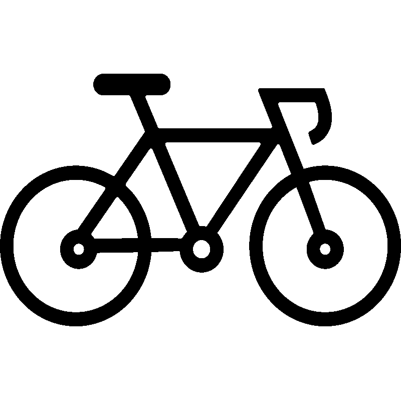

<mat-toolbar>
    <span class="brand" routerLink="">  <span> Vépick </span></span>
    <div class="sign-in-container">
        <span (click)="openConnect()" class="connect">Se connecter</span>
    </div>
</mat-toolbar>

<router-outlet></router-outlet>


